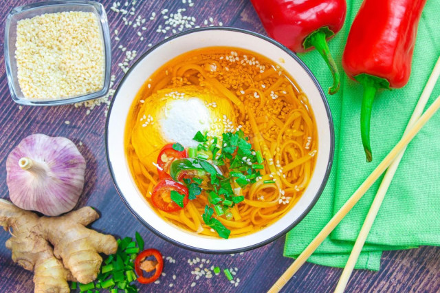

ООО "Русский дар" 
Вернутся в начальный раздел | Вернутся на главную страницу
Оборудование: чеснокодавилка, кастрюли, мелкая терка, плита, нож и ложка столовая.

Сначала подготовьте все необходимые ингредиенты. Заранее приготовьте куриный бульон, или используйте готовый полуфабрикат в кубике. Лапшу можете выбирать по желанию, многие готовят из доширака, из чан рамен. У меня яичная лапша.

Чеснок очистите и измельчите под прессом.

Корень имбиря очистите от кожуры и промойте, затем натрите на мелкой терке.

Влейте в кастрюлю растительное масло и доведите до кипения на огне, затем бросьте в масло чеснок и имбирь, слегка обжарьте.

Влейте в кастрюлю куриный бульон и доведите до кипения, затем влейте соевый соус, добавьте перец чили (в порошке) и соль.

Всыпьте в кипящий в бульон яичную лапшу, проварите 3-4 минуты и снимите с огня.

Сделайте яйца пашот для подачи супа, для этого налейте в ковш 5-7 см воды, добавьте уксус и доведите до кипения, но не сильного, только чтобы были маленькие пузырьки, сделайте воронку в воде с помощью венчика и разбейте туда яйцо ближе к стенке, варите до готовности.

Яйца готовьте по отдельности, если хотите чтобы желток внутри остался жидким варите 2 минуты, если нет, то 4 минуты.

Зелень нарежьте крупно, если берете петрушку, стебли не выбрасывайте, они дают больший аромат чем сами листья.

Разложите по четырем мискам густую лапшу с небольшим количеством бульона, сверху положите готовое яйцо пашот, посыпьте зеленью, тонко нарезанным перцем чили и кунжутом. Подавайте суп Рамен в горячем виде. Приятного аппетита!

Шаг 1, Шаг 2, Шаг 3, Шаг 4, Шаг 5, Шаг 6, Шаг 7, Шаг 8, Шаг 9, Шаг 10.